Hammel
Grobkörniger, roter und blauer Granit
Größe: 71 x 37 cm
Runenhöhe: 8,5 / 10,5 / 12,5 cm
Runenstein :
Ulfs (Stein) ...
70 - Hammel 1 - Letztes Update 23.09.2025
Listennummer : DR 70 / DK MJy 81
| Navidaten: 56.25545 9.86286 oder: Vestergade 9B, 8450 Hammel |
Transliteration: ulfs : st...
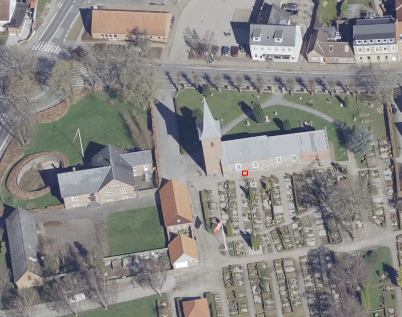
Dies ist ein Luftfoto vom 02.04.2023 von Skråfoto, das die Kirche von Hammel zeigt. Skråfoto ist eine Webanwendung, die von Klimadatastyrelsen weltweit kostenlos bereitgestellt wird - Freie Nutzung unter Beachtung der Lizenz: CC BY 4.0. Die Aufnahmen werden alle zwei Jahre erneuert und neben einer Senkrechtaufnahme wird ein Schrägbild aus jeder Himmelsrichtung angeboten, das man über eine Adresssuche aufrufen kann. Die Lage des Runensteins habe ich rot umrandet.
Dieser Quaderstein aus Granit, der als Sockelstein in der südlichen Außenmauer des Kirchenschiffs der Kirche von Hammel auch noch heute sitzt, wurde erst 1863 als Runenstein erkannt. Die erste Nachricht stammt von der Gräfin Frijs (Thyra Valborg Haffner) (*24.07.1821 - 01.03.1881 - link-LIVES)
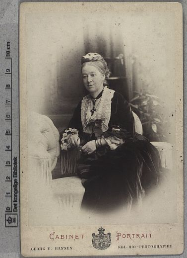
Bildquelle: Digitale Sammlung Königliche Bibliothek Kopenhagen - Lizenz: Public Domain - weitere Aufnahmen von ihr finden sich hier.über einen Brief vom 21.09.1863 mit einer von ihr gefertigten Entwurfszeichnung an Prof. P. G. Thorsen (*07.08.1811 - 06.05.1883, Bibliothekar, Runenforscher und Historiker - link-LIVES - Artikel: Levnedsbeskrivelser af de ved Københavns Universitets Firehundredaarsfest promoverede Doktorer, Illustreret Tidende 1882, Nr. 1235 - vom 27.05.1833 / Grabstein in Varde / Eheschließung in Varde am 19. August 1848)
 Fotografie
zw. 1863-1900 von
Fotograf Budtz Müller (*26.12.1837 -
30.12.1884) -
Det Kgl. Biblioteks billedsamling - Lizenz:
Public Domain
Fotografie
zw. 1863-1900 von
Fotograf Budtz Müller (*26.12.1837 -
30.12.1884) -
Det Kgl. Biblioteks billedsamling - Lizenz:
Public Domain
Sie lebte auf dem Herrenhof Frijsenborg in der Nähe von Hammel (Ca. 3,5 km nordöstlich der Kirche von Hammel gelegen). Wie viele andere Herrenhäuser wurde Frijsenborg Ende des 19. Jahrhunderts gründlich renoviert. Auf Geheiß ihres Ehemannes Christian Emil Krag-Juel-Vind-Frijs (*08.12.1817 - 12.10.1896, Staatsmann - link-LIVES)
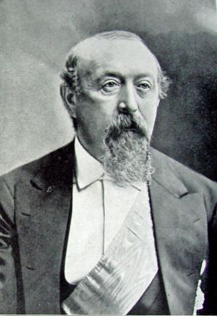
Bildquelle: Wikipedia - Lizenz: Public Domainwurde Frijsenborg unter der Leitung des Architekten Ferdinand Meldahl (*16.03.1827 - 03.02.1908, führender dänischer Architekt des Historismus - link-LIVES - Melderegister Kopenhagen - Bestattungsprotokoll)
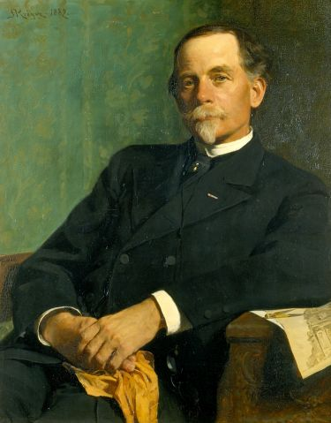
Bildquelle: Wikipedia - Lizenz: Public Domainzwischen 1862 und 1870 innen und außen gründlich umgebaut, worüber es weitestgehend das heutige, schlossartige Aussehen erhielt.
Über die Digitale Bildersammlung der Königlichen Bibliothek Kopenhagen finden sich z.B. über 300 Abbildungen/Pläne usw. zu diesem Herrenhof / Schloss und seine Umgebung.
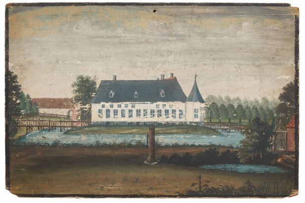
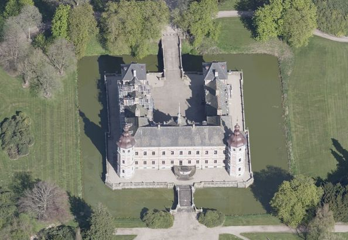
Quelle: Digitale Sammlung Nationalmuseum Kopenhagen - Lizenz: CC-BY-SA - Foto: Roberto Fortuna / Skraafoto - Aufnahme vom 06.05.2017 / Download 12.04.2023 - Lizenz: CC BY 4.0 / Skråfoto - Klimadatastyrelsen
Im Zeitraum vom 08. bis 19. Juli 1863 - also nur wenige Wochen vor der Entdeckung des Runensteins - hielt sich auch Hans Christian Andersen (*02.04.1805 - 04.08.1875 - link-LIVES - Begräbnisprotokoll) - Konfirmation ? - Dansk Demografisk Database)
 Bildquelle:
Wikipedia - Lizenz:
Public Domain
Bildquelle:
Wikipedia - Lizenz:
Public Domain
auf dem Schloss Frijsenborg auf. Es war der erste von mehreren mehrtägigen Aufenthalten des wohl berühmtesten Dänen, der auch die meistfotografierte Person seiner Zeit in Dänemark war (ca. 150 Aufnahmen). Reichlich Informationen zu der Historie des Anwesens und seinen Besuchen finden sich über diese Webseite (In dänischer Sprache). Auch über die Homepage "Hammel Billeder" finden sich zahlreiche Fotos / Ansichten dazu.
Aufgrund der Fundumstände fehlen alle weiteren Hintergrund Informationen zu diesem Runenstein. Über die Inschrift wird er in den Zeitraum 700 - 900 datiert. Sie wird von unten nach oben gelesen und lautete vermutlich "Ulfs Stein". Von den Runologen wird vermutet, dass dies ursprünglich die komplette Inschrift war, obwohl der Stein ja nur noch ein zurechtgehauenes Bruchstück ist. In der Anfangszeit der dänischen Runensteine war eine solch kurze Inschrift aber geläufig.
Prof. P. G. Thorsen berichtet in seinem Werk - De danske runemindesmærker beskrevne og forklarede, anden Afdeling, Jyllands Runemindesmærker, I. Afbildninger, 1879 - Nr. 64 - über den Stein und bringt diese Zeichnung - Google Scan.
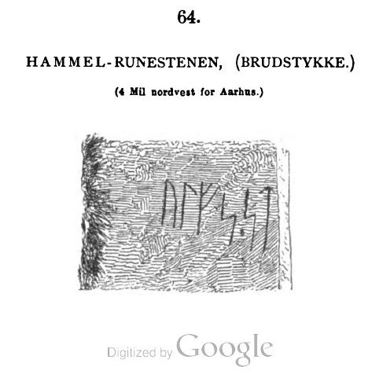
In seinem im Jahr 1880 erschienenen Band II - Text macht P. G. Thorsen (*07.08.1811 - 06.05.1883, Bibliothekar, Runenforscher und Historiker) auf der S. 173 unter der Ziffer 64 kurze Ausführungen zu diesem Runenstein (übersetzt):
"Die erste Mitteilung hierüber erhielt ich von Gräfin Th. Frijs im Sept. 1863, nebst Entwurfszeichnung. Der Stein findet sich als Stufe in einem Eingang zu einer ehemaligen Waffenkammer, die nicht mehr genutzt wird und nun als sichtbare Schrift nur noch ULFS STIN bietet, da die Fortsetzung in die Wand geht..." Die Zeichnung sollte sich eigentlich laut Lis Jacobsen/Erik Moltke - Danmarks Runeindskrifter - 1942 - Spalte 107 - in seiner Hinterlassenschaft - Pappschachtel Nr. 17 - befinden, wo ich sie aber bei meinem Besuch am 27.09.2022 nicht vorfand.
Diese Angaben entsprechen allerdings überhaupt nicht den Tatsachen - siehe auch Beitrag unten von Wimmer in seinem Runenwerk "Die Runenschrift" - Dies ist ein weiterer Beweis dafür, dass es P. G. Thorsen manchmal mit der Wahrheit nicht so genau nahm. Wenn man einmal vor Ort war und die Lage des Runensteins sieht - siehe mein 2. Foto von 2016 unten - stellt man sich automatisch die Frage wie Thorsen überhaupt zu seinen Ausführungen kommen konnte.
Prof. Ludv. F. A. Wimmer (*07.02.1839 - 29.04.1920, Philologe und Runenforscher - link-LIVES - Politiets registerblade - Bestattungsprotokoll)
 Bildquelle:
Fotografie zw. 1877-1900 von Fotograf Hansen & Weller
-
Det Kgl. Biblioteks billedsamling - Lizenz:
Public Domain
Bildquelle:
Fotografie zw. 1877-1900 von Fotograf Hansen & Weller
-
Det Kgl. Biblioteks billedsamling - Lizenz:
Public Domain
berichtet in "De danske runemindesmærker undersøgte og tolkede af Ludv. F. A. Wimmer, Andet Bind, Runestenene i Jylland og på øerne. 1899-1901 - Nr. 1, S. 6/7 - über den Runenstein. Wimmer hat den Runenstein persönlich vor Ort am 27. August 1877 und am 12.07.1882 untersucht. Dafür wurde von Magnus Petersen (*04.09.1827 - 01.02.1917, Archäologischer Zeichner und Restaurator) eine Zeichnung erstellt, die Wimmer noch überarbeitete, die ich hier aus dem o.a. Buch entlehnt wiedergebe.
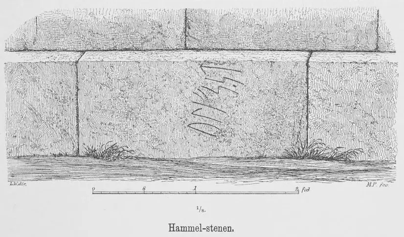
Ludv. F. A. Wimmer hat seine jahrelangen Aufzeichnungen der
"Kgl.
Bibliotek" in
Kopenhagen überlassen. Ein
Verzeichnis darüber wurde 1915 in Buchform herausgegeben - "
In seinen Unterlagen in der Königlichen Bibliothek befinden sich unter "III - Originaltegninger af de danske Runemindesmærker, udførte paa Undersøgelsesrejserne af Magn. Petersen og kontrollerede paa Stedet af Ludv. Wimmer, samt Prøvetryk af de paa Grundlag af de nævnte Tegninger, Aftryk o. s. v. til De danske Runemindesmærker" udførte Afbildninger med Wimmers Rettelser"


zu dem Runenstein von Hammel unter der Nr. 19 seine Aufzeichnungen, wobei ich am 27.09.2022 diese Zeichnung von Magnus Petersen - datiert auf den 27.08.1877 - fotografieren durfte.

Ludv. F. A. Wimmer hat in seinem in deutscher Sprache erschienenen Runenwerk "Die Runenschrift" aus dem Jahr 1887 auf der S. 355 eine Beschreibung und Lesung der Inschrift veröffentlicht.
Insbesonder hebt er darin auf die völlig unzulängliche und fehlerhafte Wiedergabe der Informationen zu diesem Runenstein bei P. G. Thorsen ab. Er schreibt dort nämlich:
"In De danske Runemindesmærker" II, 2, s. 173 teilt Thorsen nämlich mit, dass der Stein als Stufe im Eingang zu einer früheren Waffenkammer liegt", und dass man von der Schrift jetzt nur ulfs stin sieht, indem die Fortsetzung in die Mauer hineingeht", sowie dass das für t gebrauchte Zeichen nicht der alten Buchstabenreihe angehört" (wie dies aus seiner Zeichnung II, 1, no. 64 hervorgeht, liest er nämlich
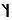
1 - zu Fussnote 1) Dass diese Form sich nicht in der alten Buchstabenreihe finde, ist ja übrigens ganz irrig (siehe oben 'Anhang' III) - Alle diese Bemerkungen sind indessen vollständig unrichtig: Bei meiner Untersuchung des Steines im Jahre 1877 zeigte sich nämlich, dass er nicht als Stufe im Eingange einer früheren Waffenkammer lag, sondern als Sockelstein in der Kirche benutzt war. Zu diesem Behufe ist er seiner Zeit gespalten worden, so dass nur 6 Runen von der Inschrift übrig geblieben sind, ohne dass irgend etwas durch die Mauer verdeckt ist. Zugleich ist der Stein auch etwas abgeputzt und geglättet worden, so dass die Runen ziemlich ausgeschabt sind, ohne dass die Lesung jedoch an irgend einer Stelle zweifelhaft sein kann.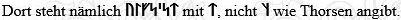
Da sich keine Spur von Runen auf dem nicht ganz kleinen Stücke des Steines vor ulfs und ebenso wenig über oder unter dem erhaltenen Teile der Inschriftzeile findet, so muss die Inschrift mit diesem Worte begonnen haben, und sowohl der ganze Charakter der Runen, das kleine längliche Trennungszeichen, wie die in der Inschrift gebrauchte Formel machen es mir mehr als wahrscheinlich, dafs wir hier ein Denkmal haben, das genau mit dem Kalleruper und Snoldelever Steine übereinstimmt. Ich vermute daher, dass die Inschrift ulfs ' stain gelautet hat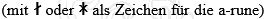
, wonach möglicherweise noch wie auf den beiden genannten wesentlich gleichzeitigen Steinen eine Angabe darüber gefolgt ist, wessen Nachkomme ulfR war. Wir haben hier einen eklatanten Beweis dafür, wie notwendig Autopsie ist, um das Alter eines Denkmals wie dieses zu bestimmen; denn die Runen ulfs st können aus rein sprachlichen Gründen natürlich ebenso gut dem 8. oder dem 9. wie dem 12., ja sogar dem 19. Jhdt angehören!..."Adolf Noreen (*13.03.1854 - 13.06.1925, schwedischer Linguist)
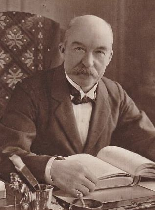
Bildquelle: Wikipedia - Lizenz: Public Domainführt den Runenstein von Hammel mit einer Datierung um 900 (nach Ludv. F.A. Wimmer) in seinem Werk "Geschichte der nordischen Sprachen" auf der S. 8 an.
Erik Moltke (*04.04.1901 - 19.10.1984, Runologe, Historiker - link-LIVES)
 Bildquelle: Scan von Buchumschlag "Runerne i Danmark og ders
oprindelse" - Erik Moltke - 1976 - Lizenz:
CC-BY-SA
Bildquelle: Scan von Buchumschlag "Runerne i Danmark og ders
oprindelse" - Erik Moltke - 1976 - Lizenz:
CC-BY-SA
hat dieses sw Foto am 05.06.1930 aufgenommen.
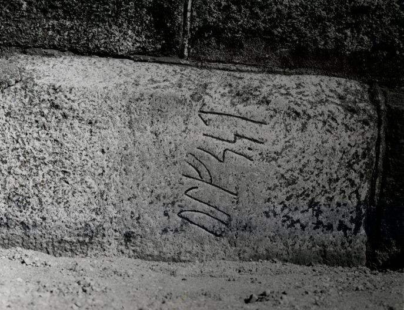
Digitale Sammlung Nationalmuseum Kopenhagen - Lizenz: CC-BY-SA
Im Vorfeld zu dem 2016 erschienenen Buch von Lisbeth M. Imer (*1973, Runologin am Nationalmuseum Kopenhagen) "Danmarks Runesten - en fortælling" reiste sie mit dem Fotografen Roberto Fortuna zur Bestandsaufnahme durch die Lande. Dieser hat die Runensteine mit Schräglicht, in den Abendstunden, aufgenommen und darüber wirklich herausragende Fotos erzielt. Diese Fotografie stammt vom 14.03.2013.
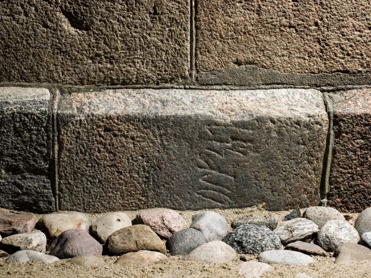
Digitale Sammlung Nationalmuseum Kopenhagen - Lizenz: CC-BY-SA
Bei meinem Besuch in Hammel am Mittwoch, 24.08.2016, habe ich diese Fotos aufgenommen:
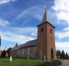 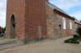 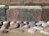
Im Rahmen meiner 2022er Jütland Wikinger Tour war ich nun am Donnerstag, 09.06.2022, erneut an der Kirche von Hammel und habe diese Fotos gemacht.
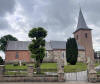 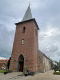 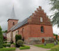 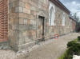 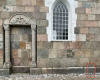 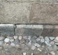 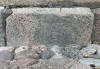
Die dänische Runendatenbank im Internet hat hier Infos zu diesem Runenstein.
Der entsprechende Eintrag in "Fund og Fortidsminder" ist hier verlinkt. Darin ist inzwischen dieser Zustandsbericht des Steinrestaurators Leif Vognsen aus dem Jahr 2018 eingebettet.
Über diesen Link finden sich zu dem Runenstein Informationen des Forschungsprojektes "Runes" der Akademie der Wissenschaften zu Göttingen.
Über Google StreetView kann man heutzutage bequem von zu Hause aus vom Kirchhof aus in die Kirche von Hammel eintreten, bis zum Altar laufen und sich in aller Ruhe überall umsehen. Der Runenstein in der südlichen Mauer ist dabei aber nicht sichtbar.
Auf den Webseiten des Nationalmuseums - Danmarks Kirker - kann man eine in dänischer Sprache gehaltene 53-seitige Abhandlung als pdf-Datei zur Baugeschichte/Innenausstattung der Kirche von Hammel aus den Jahren 1990-91 abrufen.
Hammel 2
Listennummer : DR 71 / DK MJy 82
Transliteration: [mahnus]
In der Kirche von Hammel gab es früher noch einen zweiten, allerdings mittelalterlichen Runenstein. Er ist heute verschwunden, war aber bis etwa 1877 in der südlichen Turmeckmauer als Quaderstein (ca. 30 x 60 cm) eingesetzt. Darüber weiß man heute durch Aufzeichnungen in den "Efterladte papirer" von Prof. P. G. Thorsen (*07.08.1811 - 06.05.1883, Bibliothekar, Runenforscher und Historiker - link-LIVES - Artikel: Levnedsbeskrivelser af de ved Københavns Universitets Firehundredaarsfest promoverede Doktorer, Illustreret Tidende 1882, Nr. 1235 - vom 27.05.1833 / Grabstein in Varde / Eheschließung in Varde am 19. August 1848)
Bildquelle: Fotografie
zw. 1863-1900 von
Fotograf Budtz Müller (*26.12.1837 -
30.12.1884) -
Det Kgl. Biblioteks billedsamling - Lizenz:
Public Domain
und der u.a. Zeichnung des Runensteins von Rasmus Henrik Kruse (*07.08.1796 - 30.05.1877, Landschaftsmaler - link-LIVES - Heirat 21.12.1851)
 Bildquelle:
Det Kgl. Biblioteks billedsamling - Lizenz:
Public Domain
Bildquelle:
Det Kgl. Biblioteks billedsamling - Lizenz:
Public Domain
aus dem Jahr 1848 oder 1849. Darüber ist auch die Inschrift "Magnus" bekannt.
Digitale Sammlung des Nationalmuseums - Lizenz: Public Domain
Rasmus Henrik Kruse hat seine Aufzeichnungen zu dem Runenstein in seiner Abhandlung "Nørre Jyllands Mærkværdigheder i det 19. Aarh. Hs. Bd 1-2 (med) Tillæg 1-2" aufgenommen. Genaugenommen im Band 2, 1852, S. 49 mit der Tafel 22. Darin finden sich allerdings keine Aufzeichnungen zum Stein 1, da dkieser erst 1863 als Runenstein erkannt wurde.


Dieses Werk wird heute im Nationalmuseum in Kopenhagen, Antikvarisk-Topografisk Arkiv, aufbewahrt. Dort durfte ich am Dienstag, 27.09.2022, zu Gast sein und die vier Bände in Händen halten und fotografieren.
In seinem im Jahr 1880 erschienenen Band II - Text macht Prof. P. G. Thorsen auf der S. 173 unter der Ziffer 64 kurze Ausführungen zu diesem Runenstein "nu mulig forsvundet" (jetzt möglicherweise verschwunden).
Er gibt dort das Jahr 1838, die Maße und die Inschrift wieder.
Die dänische Runendatenbank im Internet hat hier Infos zu diesem Runenstein.
Über diesen Link finden sich zu dem Runenstein Informationen des Forschungsprojektes "Runes" der Akademie der Wissenschaften zu Göttingen.